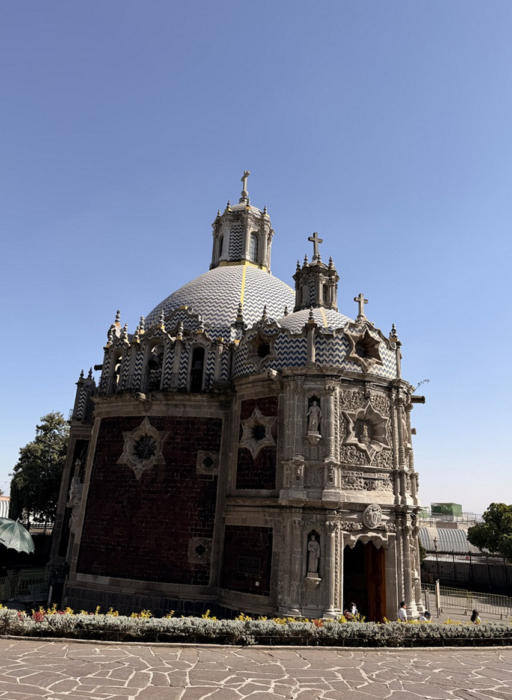
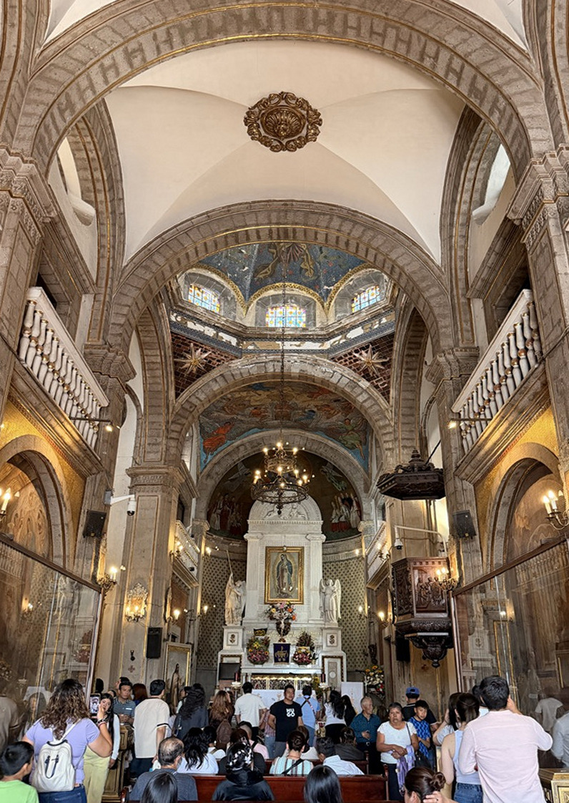
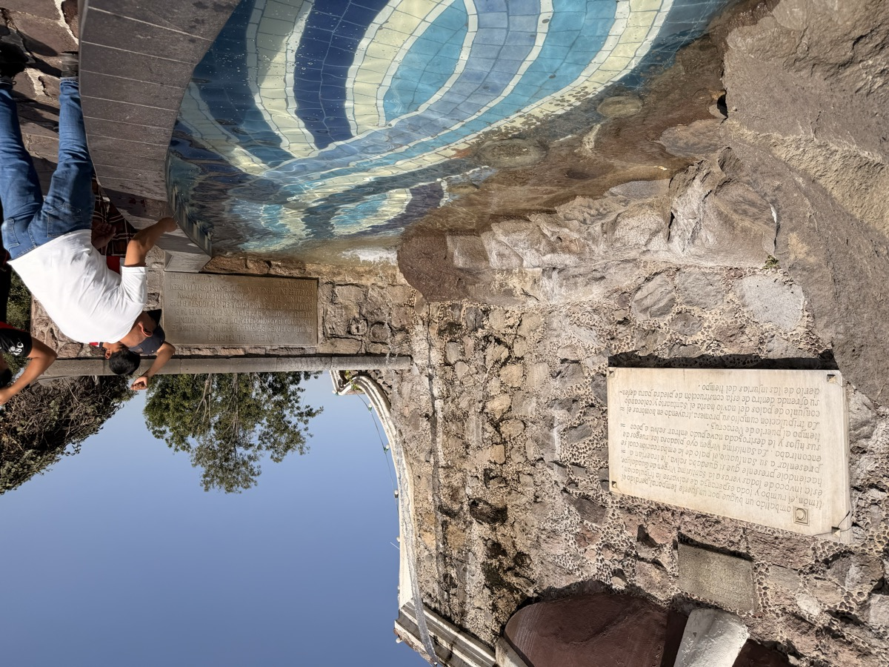

グアダルーペ大聖堂（Basílica de Nuestra Señora de Guadalupe）は、年間数千万人規模の巡礼者が集まるとされるカトリックの聖地で、世界で最も多くの訪問者を受け入れる宗教施設のひとつに数えられている。コスタリカでカトリック文化に触れて以来、中南米のキリスト教と先住民信仰の関係に興味を持っていた自分にとって、ここはどうしても来てみたかった場所だった。
旧バシリカと新バシリカ
敷地内には「旧バシリカ」と「新バシリカ」の2つの聖堂が並んでいる。17世紀に建設された旧バシリカは、地盤沈下で建物が大きく傾いてしまったため礼拝の場としては使われなくなり、現在は主たる巡礼・礼拝機能を新バシリカに譲っているが、今もグアダルーペ大聖堂複合施設を構成する歴史的聖堂として見学できる。その隣に1976年に建設されたのが新バシリカだ。


動く歩道と聖母のマント
新バシリカの見どころは、祭壇の奥に飾られたグアダルーペの聖母像だ。先住民のフアン・ディエゴのマントに聖母マリアが現れたとされる1531年の奇跡の証拠として、マントそのものが展示されている。巡礼者が絶え間なく訪れるため、正面の祭壇に近い通路には動く歩道が設置されており、人の流れを滞らせないようになっていた。

テペヤックの丘へ
大聖堂の背後にあるテペヤックの丘には、奇跡が起きたとされる礼拝堂「エル・ポソ礼拝堂」があり、丘の頂上まで遊歩道が整備されている。上からは大聖堂複合施設全体と、その奥にメキシコシティの街並みが一望できる。標高2,200m超の高地に広がる都市のスカイラインは、霞がかかって幻想的だった。

コスタリカで感じた「信仰が日常に溶け込む文化」の、より濃縮された形がここにある。膝をついて祭壇まで進む人、涙を流して祈る人——グアダルーペは「観光地」ではなく、今も生きた聖地だった。
今回訪れた場所
1
グアダルーペ大聖堂 Basílica de Nuestra Señora de Guadalupe
Plaza de las Américas 1, Villa de Guadalupe, CDMX / 地下鉄3号線 La Raza駅からバス or タクシーで約15分。入場無料。毎日6:00〜21:00
2
テペヤックの丘 Cerro del Tepeyac
大聖堂敷地内。徒歩で丘の頂上まで登れる。展望テラスからメキシコシティの全景を望める